Academic Project Report • Data Science & Machine Learning
Rakuten France Multimodal Product Classification
Systematic exploration, deep learning progression, Grad-CAM visual interpretability, and late fusion by soft voting across 84,916 e-commerce listings.
Key Results & Findings
Strict Evaluation Protocol: A locked 80/20 stratified split (67,932 train, 16,984 validation). All models learn only from the training split. The final fusion, equal soft voting, learns nothing from the validation products, so its score compares directly with the single models.
Multimodal Synergy: Equal soft voting of CamemBERT, the SVM and ConvNeXt reaches 0.8941 Weighted F1 (Macro F1 0.8826, 1,776 errors), cutting 306 errors (−14.7%) compared to CamemBERT alone and 880 errors (−33.1%) compared to calibrated SVM.
Rescuing Missing Descriptions: On listings lacking descriptions (35.0% of validation products), fusion gains +3.94 F1 points over CamemBERT and +9.47 F1 points over LinearSVC, proving that the visual stream decisively compensates for text deficits.
Computer Vision Optimization: From a frozen ResNet18 baseline (0.4818 F1) to ConvNeXt-Tiny with smart white-border cropping (0.6998 F1), +2.59 points over the standard ConvNeXt-Tiny.
Interpretability: On the examples shown, Grad-CAM shows ConvNeXt looking at the product rather than the background. Without the image, soft voting loses 0.77 points, mostly on New Books and Used Books.
Project: Rakuten France Product Classification Challenge Authors: Data Science & Machine Learning Team Repository:liora-capstone
Modern e-commerce platforms process millions of seller-generated product listings daily. Accurate, automated categorization is foundational for catalog organization, search retrieval, facet navigation, and recommendation engines. The Rakuten France Multimodal Product Classification Challenge requires categorizing listings into 27 distinct product types (prdtypecode) using noisy, seller-provided text (title and optional description in French) and a single 500 × 500 pixel catalog image.
84,916
Products Analyzed
27
Product Categories
35.1%
Missing Descriptions
0.8941
Final Weighted F1
Text is the strongest single modality for e-commerce classification. However, text models struggle when seller titles are brief, keyword-stuffed, or linguistically ambiguous. The visual stream provides essential orthogonal information in these failure modes—particularly across book, magazine, toy, and gaming categories.
To establish an empirical floor, the Zero-Rule Majority Class Baseline assigns every sample to the largest category (Pool, code 2583). On the 16,984 validation products, this naive baseline achieves an accuracy of 12.02%, a Weighted F1 of 0.0258, and a Macro F1 of 0.0080. Our final multimodal model, equal soft voting, reaches 0.8941 Weighted F1 (Macro F1 0.8826), reducing errors to 1,776 listings.
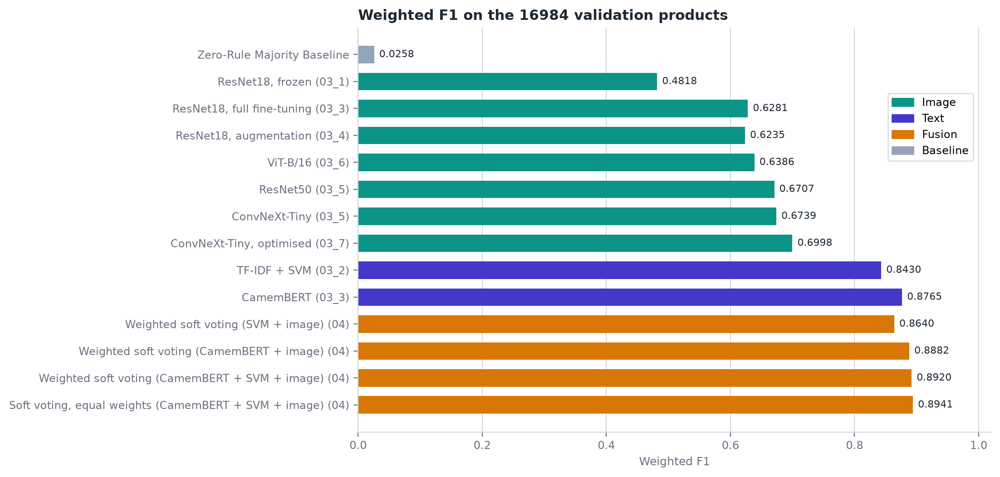
Figure 1: Weighted F1 benchmark progression from the naive majority baseline to deep unimodal models and multimodal late fusion on the locked 16,984 validation products.
2. Exploratory Data Analysis & Data Contract
2.1 Class Distribution and Imbalance
The dataset comprises 84,916 labelled products across 27 product categories. The distribution exhibits substantial class imbalance:
The largest category is Pool (code 2583) with 10,209 products (12.02% of the catalog).
The smallest category is Wargames (code 1180) with 764 products (0.90% of the catalog).
The imbalance ratio between the largest and smallest category is 13.36 to 1 (~13.4:1). Six categories contain fewer than 1,000 products.
Due to this skew, overall accuracy is an inadequate metric. We evaluate models using Weighted F1 (the official challenge metric) and report Macro F1 to monitor performance on minority classes.
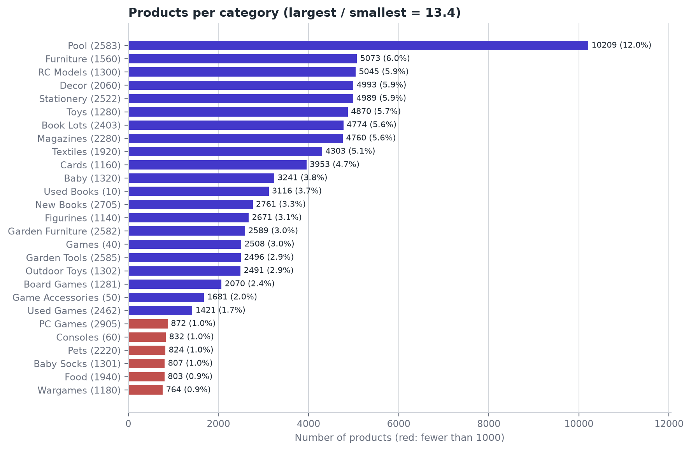
Figure 2: Products per category across the catalog. Red bars indicate the six minority categories containing fewer than 1,000 listings.
Disclaimer on Category Nomenclature: The challenge dataset identifies classes solely by numeric codes (prdtypecode). Category names throughout this report (e.g., Used Books, Wargames, Pool) represent our team's interpretation based on systematic catalog exploration and domain analysis; they are not official Rakuten labels.
Code
Category Name (Team Interpretation)
Full Count
Validation Count
Catalog Share
Missing Desc. %
10
Used Books
3,116
623
3.67%
89.2%
40
Games
2,508
502
2.95%
65.5%
50
Game Accessories
1,681
336
1.98%
28.3%
60
Consoles
832
166
0.98%
16.0%
1140
Figurines
2,671
534
3.15%
64.6%
1160
Cards
3,953
791
4.66%
91.2%
1180
Wargames
764
153
0.90%
80.0%
1280
Toys
4,870
974
5.74%
21.9%
1281
Board Games
2,070
414
2.44%
23.8%
1300
RC Models
5,045
1,009
5.94%
23.3%
1301
Baby Socks
807
161
0.95%
13.0%
1302
Outdoor Toys
2,491
498
2.93%
11.1%
1320
Baby
3,241
648
3.82%
34.0%
1560
Furniture
5,073
1,015
5.97%
3.5%
1920
Textiles
4,303
861
5.07%
4.8%
1940
Food
803
161
0.95%
5.6%
2060
Decor
4,993
999
5.88%
5.7%
2220
Pets
824
165
0.97%
8.0%
2280
Magazines
4,760
952
5.61%
93.3%
2403
Book Lots
4,774
955
5.62%
97.4%
2462
Used Games
1,421
284
1.67%
96.3%
2522
Stationery
4,989
998
5.88%
23.8%
2582
Garden Furniture
2,589
518
3.05%
2.4%
2583
Pool
10,209
2,042
12.02%
8.8%
2585
Garden Tools
2,496
499
2.94%
7.9%
2705
New Books
2,761
552
3.25%
37.1%
2905
PC Games
872
174
1.03%
0.0%
2.2 Text Exploration: Vocabulary, Lengths, and Missingness
Title (designation): Available for 100% of products. The median length is 11 words (interquartile range 7–14; mean 11.6 words). Titles are dense with brand names, model numbers, and technical attributes.
Description (description): Missing for 29,800 products (35.1% of the catalog). In the validation split, 5,936 products (34.95%) lack descriptions. Missingness is highly concentrated in book-related categories: Book Lots (2403) has 97.4% missing descriptions, Used Games (2462) has 96.3%, Magazines (2280) has 93.3%, and Used Books (10) has 89.2%. In these categories, unimodal text models are forced to operate purely on brief titles.
Formatting Noise: Raw HTML entities (e.g., &, é) occur in the descriptions of 41.3% of products, while raw structural tags (<p>, <div>, <br>) appear in 18.4%.
Duplicate Titles: 4,187 products (4.9%) share an identical title string with at least one other catalog entry. In 160 clusters, identical titles map to different product categories (e.g., promotional merchandise vs. media).
2.3 Image Exploration: Dimensions and Border Padding
Dimensions & Format: All 84,916 images are 500 × 500 pixel RGB JPEGs.
The White Border Problem: Many catalog images show a small product in the middle of a large white background. Resizing the whole image to 224 × 224 pixels makes the product very small and loses logos and printed text.
Exact Duplicates: SHA-256 file hashing reveals identical images used across different product listings (e.g., generic placeholder images and multi-pack variants).
2.4 Exact Column Usage Across Model Tiers
To ensure absolute architectural reproducibility, the table below specifies the exact input columns consumed by each model family:
Cleaned and concatenated into text_combined; binary TF-IDF unigram + bigram matrix (460,326 features).
CamemBERT-base
Text
designation, description
Cleaned and concatenated into text_combined; tokenized via SentencePiece BPE, truncated to 128 tokens.
Soft Voting (Equal / Weighted)
Fusion
Model output probabilities
Probability vectors from CamemBERT (27), LinearSVC (27), and ConvNeXt-Tiny (27).
3. Preprocessing and Validation Protocol
3.1 Locked Stratified Split
Locked 80/20 Validation Split: A single, globally stratified 80/20 train/validation partition (67,932 training products, 16,984 validation products, random_state=42) was fixed at project inception (data_split.csv). All text, image, and fusion models strictly evaluated on this exact held-out split.
To prevent cross-split contamination, an SHA-256 hash deduplication pass verified that no training image file identical to a validation image was retained in the training set.
3.2 Evaluation Protocol for the 16,984 Validation Rows
A critical requirement of this project is absolute transparency regarding how the 16,984 validation products were handled:
Unimodal Training: The text classifiers (LinearSVC, CamemBERT) were trained only on the 67,932 training rows, and ConvNeXt-Tiny on the 62,312 training images left after removing duplicate and conflicting images. None of them ever saw a single row or image from the 16,984 validation set during training.
Probability Extraction: The trained unimodal models generated out-of-sample probability distributions for each of the 16,984 validation products.
Equal Soft Voting: The three probability vectors are averaged with equal weights. Nothing is fitted on the validation products, so the score is computed directly on all 16,984 of them.
Weighted Soft Voting (comparison only): The weights are chosen with 5-fold stratified CV on the validation products (CV_FOLDS=5, random_state=42): chosen on 4/5 of the rows (~13,587 products), applied to the held-out 1/5 (~3,397 products).
Final Metric: The reported final score (0.8941 Weighted F1, 1,776 errors) is equal soft voting on all 16,984 validation products. No model and no fusion rule was trained on these products.
3.3 Text Preprocessing Pipeline
Entity Decoding: Multi-pass HTML unescaping converts entities (e.g., & → &, é → é).
Tag Stripping: BeautifulSoup strips HTML markup, substituting spaces to preserve word boundaries.
Whitespace Normalization: Lowercasing and whitespace collapsing; accents are retained for French linguistic fidelity.
Field Merging: Designation and description are merged into text_combined. Missing descriptions are handled seamlessly without artificial tokens.
To overcome the white-border pathology identified in Section 2.3, we developed a deterministic smart white-border cropping algorithm:
Each image is turned to greyscale. Pixels darker than a grey level of 245 count as product; lighter pixels count as white background.
If the non-background bounding box covers less than 75% of the canvas, the algorithm extracts a square crop centered on the product bounding box at native resolution (at least 224 pixels), with 12 pixels of padding around the product.
Products that naturally fill the frame are preserved without distortion.
All cropped images are resized to 224 × 224 RGB tensors and normalized using ImageNet channel statistics.
4. Text Classification Progression
4.1 Classical Text Models and Tuning
Using 3-fold cross-validation on the training set [notebook 03_2_text_optimisation.ipynb], we evaluated three classical linear classifiers on TF-IDF features:
Classifier
3-Fold CV Weighted F1
Empirical Observations
Complement Naive Bayes
0.7600
Fast, handles class imbalance via complement rule, but lags 6.8 points behind LinearSVC.
Logistic Regression (SGD)
0.8084
Outputs direct probabilities, but lags 2.0 points behind LinearSVC.
LinearSVC
0.8284
Superior maximum-margin separation in high-dimensional sparse text spaces. Selected as primary linear model.
In notebook 03_2_text_optimisation.ipynb, we systematically tuned the LinearSVC pipeline:
Vocabulary Dimension: Expanding from the baseline's 50,000 feature limit to the full vocabulary (460,326 unigrams and bigrams, min_df=2) gained +1.2 F1 points on CV. Rare brand names and model numbers reside in the long tail.
Binary TF-IDF: Clamping term frequency to binary presence/absence (binary=True) yielded a +0.5 F1 point gain. Binary weighting neutralizes keyword stuffing by sellers who repeat terms across descriptions.
Regularization: A grid search over C ∈ {0.1, 0.5, 1.0, 2.0} confirmed C = 1.0 as optimal.
Platt Scaling Calibration: Because LinearSVC produces unbounded signed distances rather than probabilities, we wrapped it in CalibratedClassifierCV(cv=3, method='sigmoid'). On the 16,984 validation rows, calibrated LinearSVC achieved 0.8430 Weighted F1 (Macro F1 0.8326, 2,656 errors), providing reliable probability vectors for late fusion.
4.2 Transformer Fine-Tuning: CamemBERT
To capture semantic context and French syntactic nuance, we fine-tuned CamemBERT (almanach/camembert-base, 110 million parameters) [notebook 03_3_text_camembert.ipynb].
Training Setup: Fine-tuned for 2 epochs on the 67,932 training texts; AdamW optimizer with learning rate 5 × 10−5, weight decay 0.01, batch size 16, 6% linear warmup followed by linear decay, sequence length 128 tokens.
Epoch 1: Training loss dropped from 2.64 to 0.58; validation loss was 0.501, achieving 0.8527 Weighted F1.
Epoch 2: Training loss reached 0.34; validation loss declined to 0.427, reaching 0.8765 Weighted F1 (Macro F1 0.8594, 2,082 errors). Continued reduction in validation loss confirmed healthy generalization without overfitting.
Comparison to LinearSVC: CamemBERT reduced errors from 2,656 to 2,082 (574 fewer errors, a 21.6% reduction). Major gains occurred across book categories: Used Books (+12.3 F1 points), Magazines (+10.9), New Books (+10.7), and Book Lots (+10.0). LinearSVC outperformed CamemBERT on 7 categories, most clearly on Wargames (−8.4 points for CamemBERT), where exact rare unigrams (e.g., warhammer, heroclix) govern classification. On the other six, the gap is at most 2.8 points (Outdoor Toys).
5. Computer Vision Progression
5.1 Deep Learning Progression Across Backbones
Classifying e-commerce products from images alone is inherently challenging due to packaging similarities and canvas padding. Over multiple systematic experiments [notebooks 03_image_fineTuning/], we progressed from a frozen ResNet18 baseline to an optimized modern ConvNeXt-Tiny architecture:
Notebook
Architecture
Training Strategy & Pipeline Enhancements
Weighted F1
Macro F1
Errors
03_1
ResNet18
Frozen ImageNet backbone; linear classification head only.
0.4818
0.4231
8,462
03_3
ResNet18
Full end-to-end fine-tuning across all convolutional layers.
0.6281
0.5943
6,315
03_4
ResNet18
Augmentation (random crops, flips, rotation, colour jitter, random erasing), label smoothing and weight decay.
0.6235
0.5876
6,377
03_6
ViT-B/16
Vision Transformer with self-attention on 16 × 16 patches.
0.6386
0.5982
6,108
03_5
ResNet50
Deeper residual network; standard 224 × 224 cropping.
0.6707
0.6415
5,566
03_5
ConvNeXt-Tiny
Modern 7 × 7 depthwise conv backbone; standard cropping.
From the standard to the optimised ConvNeXt-Tiny: going from 03_5 (0.6739 Weighted F1) to 03_7 (0.6998) adds +2.59 points Weighted F1 and +2.94 points Macro F1. This gain combines four changes: the smart white-border crop, layer-wise learning rates, the balanced sampler and flip TTA. The notebooks do not measure the crop on its own; flip TTA alone adds about 0.2 points (0.6980 → 0.6998).
6. Multimodal Fusion & Empirical Results
6.1 Fusion by Soft Voting
For every listing in the 16,984 validation set, our unimodal models yield three calibrated class probability distributions: PSVM, PCamemBERT, and PConvNeXt. We combine them by soft voting:
Soft Voting: Linear combination of probabilities:
ŷ = argmaxc ∑m wm Pm(c)
We evaluated equal weighting (w = [1/3, 1/3, 1/3]) and grid search weighted voting over 5-fold CV.
Weighted soft voting: each model gets its own weight (steps of 0.1, summing to 1), chosen on the 4/5 part of each fold only. The folds chose 0.4 for CamemBERT, 0.3 for the SVM and 0.3 for the image (0.8920 Weighted F1). Equal weights score slightly higher (0.8941), because the 0.1 grid cannot choose 1/3. The gap is within noise, so tuning the weights adds nothing: the three models are already well balanced. Because its weights are chosen on validation results, weighted soft voting is shown only as a comparison; equal soft voting is the final model.
The benchmark scores come from Rakuten's hidden test set; ours come from our validation split. They are not directly comparable, but both are held-out products from the same catalogue, so the comparison gives an indication.
Modality
Challenge benchmark (hidden test set)
Ours (validation split)
Text
0.8113 (CNN on titles only)
0.8765 (CamemBERT, title and description)
Image
0.5534 (ResNet50)
0.6998 (ConvNeXt-Tiny)
Text and image
Not provided
0.8941 (equal soft voting)
6.2 Performance Gain on Products With vs. Without Description
A pivotal question for e-commerce cataloging is how multimodal fusion performs when product descriptions are absent. The empirical breakdown across the 16,984 validation listings provides unambiguous evidence:
Model Architecture
Overall F1 (16,984)
With Description (11,048)
No Description (5,936)
Modality Drop (Δ)
ConvNeXt-Tiny (Image)
0.6998
0.6845
0.7351
+0.0506
LinearSVC (Text)
0.8430
0.8768
0.7796
−0.0972
CamemBERT (Text)
0.8765
0.8996
0.8349
−0.0647
Soft Voting Equal Weights
0.8941
0.9050
0.8743
−0.0307
Key Finding on Missing Descriptions: When descriptions are missing (35.0% of products), LinearSVC F1 plunges by 9.72 points and CamemBERT drops by 6.47 points. Meanwhile, the image model achieves 0.7351 F1 on these products (book covers and packaging are highly informative). Consequently, equal soft voting gains +3.94 F1 points over CamemBERT alone (0.8349 → 0.8743) and +9.47 F1 points over LinearSVC. The visual stream serves as a resilient safety net for title-only catalog listings.
6.3 Per-Category Synergies and Delta Distribution
Comparing equal soft voting with CamemBERT across all 27 categories (Figure 3):
22 of 27 categories improve over CamemBERT alone.
5 categories drop slightly: RC Models (1300, −1.9 points), Baby Socks (1301, −0.6), Board Games (1281, −0.4), Textiles (1920, −0.2) and Toys (1280, −0.1).
Largest gains: Wargames (1180, +10.7 points, 0.614 → 0.720), Used Books (10, +8.6), New Books (2705, +8.6), Games (40, +5.9) and Outdoor Toys (1302, +4.4). The SVM catches the rare exact words of Wargames, and the image tells new books from used ones.
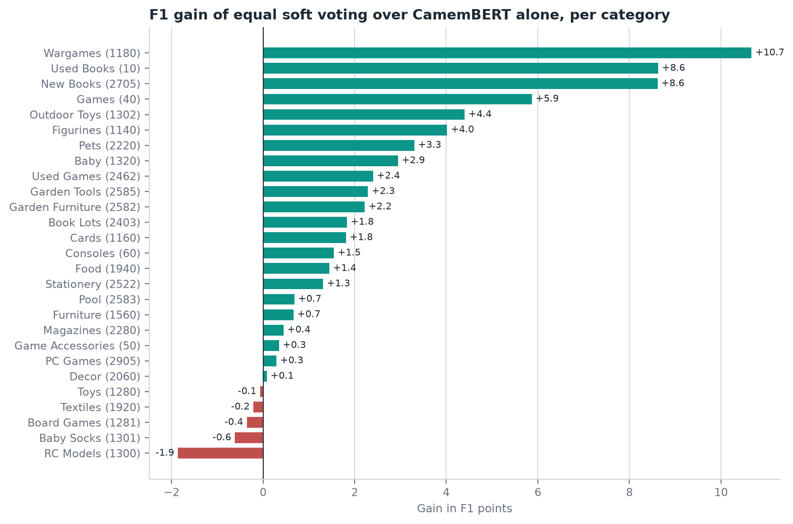
Figure 3: F1 gain of equal soft voting over CamemBERT alone, per category. 22 categories improve and 5 drop slightly.
6.4 Confusion Matrix and Error Patterns
Figure 4 displays the normalized confusion matrix of equal soft voting across all 27 categories:
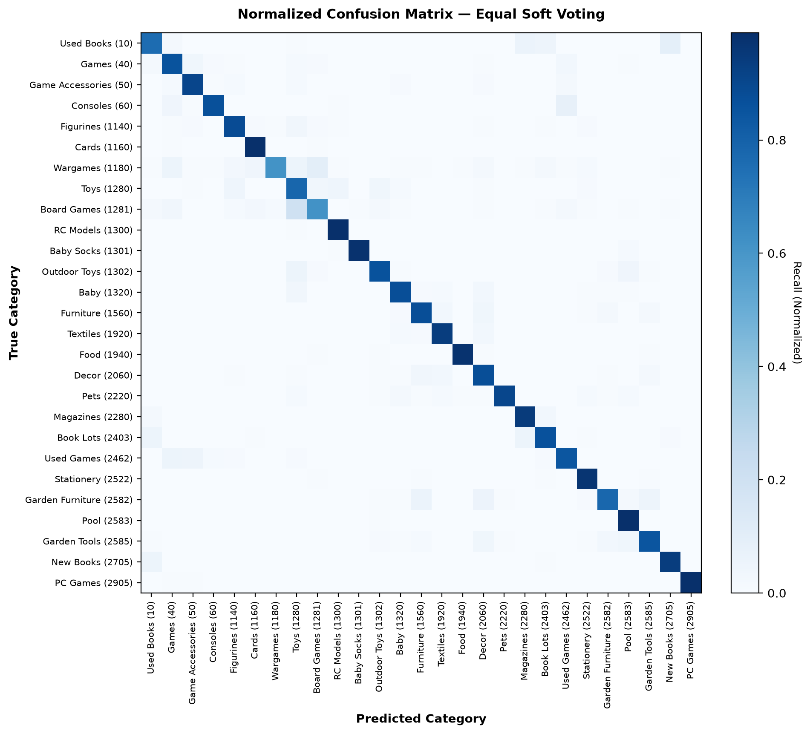
Figure 4: Normalized confusion matrix of equal soft voting on the 16,984 validation products.
True Category
Predicted Category
Errors
Domain Nature of Misclassification
Board Games (1281)
Toys (1280)
82
Cardboard packaging overlap; toy brands marketing licensed board games.
Used Books (10)
New Books (2705)
57
Identical title strings; listing fails to specify condition in text.
Book Lots (2403)
Used Books (10)
50
Volume bundles vs. single vintage novels; identical cover artwork.
Book Lots (2403)
Magazines (2280)
50
Serialized paperbacks sharing periodical format and binding.
Toys (1280)
RC Models (1300)
43
Drone-like products appear in both toys and RC models.
Toys (1280)
Figurines (1140)
42
Franchise action figures categorized ambiguously as toys vs. collectibles.
Used Books (10)
Magazines (2280)
37
Old books and magazine issues with short, similar titles.
Furniture (1560)
Decor (2060)
36
Small shelving, bedside lamps, and decorative storage.
The confusion matrix confirms that remaining misclassifications are almost exclusively confined to semantically adjacent sibling classes within the same broad domain (e.g., book bundles vs. individual used books; board games vs. children's toys). Cross-domain errors (e.g., confusing garden pools with video games) have been virtually eliminated by the multimodal fusion.
7. Interpretation of Results
7.1 Text Interpretability: Which Words Decide
Inspecting LinearSVC feature weights [notebook 05_interpretability.ipynb] reveals why classical linear models struggle on book sub-genres:
Category-Defining Vocabulary: Unambiguous categories possess high-weight, exclusive n-grams: piscine and intex for Pool (2583), chien and laisse for Pets (2220), warhammer and heroclix for Wargames (1180).
Few Strong Book Words: Each book category has only a few strong words: lot and tomes for Book Lots (2403), dates such as du 01 for Magazines (2280). A book title without one of these words gives the SVM almost nothing to go on, so it cannot resolve condition or format.
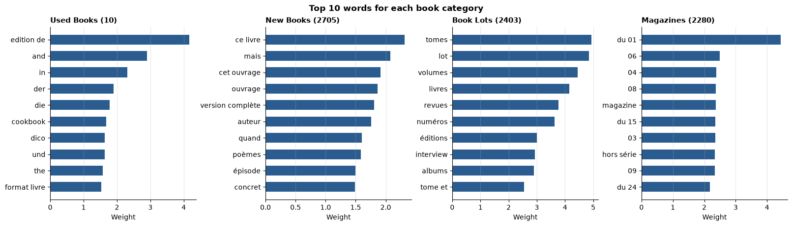
Figure 5: Top LinearSVC feature weights across the four book categories. Each category has only a few strong words, such as lot and tomes for Book Lots and dates for Magazines.
CamemBERT word importance: CamemBERT has no word weights, so we remove one word at a time and measure how much its confidence drops (Figure 6):
Book Lots, CamemBERT right: for les chemins de maison haute 1 & 2, removing 1 lowers its confidence by 18 points. CamemBERT reads 1 & 2 as two volumes, a lot of several books. The SVM predicted Used Books.
Wargames, CamemBERT wrong: for chaos chosen age of sigmar, the word of matters most (33 points). CamemBERT reads age of … like a video game title and predicts Games. The SVM gets it right through sigmar, a rare Warhammer word.
The two text models fail on different products, which is why combining them helps.
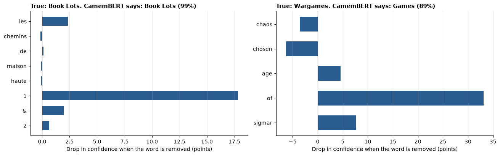
Figure 6: Drop in CamemBERT's confidence when each word is removed, for one title it classifies correctly (left) and one it gets wrong (right).
7.2 Image Interpretability: Grad-CAM
To evaluate what the optimized ConvNeXt-Tiny network attends to, we implemented Gradient-weighted Class Activation Mapping (Grad-CAM) targeting the last ConvNeXt stage (features[7] in torchvision) [notebook 03_8_image_convnext_gradcam.ipynb].
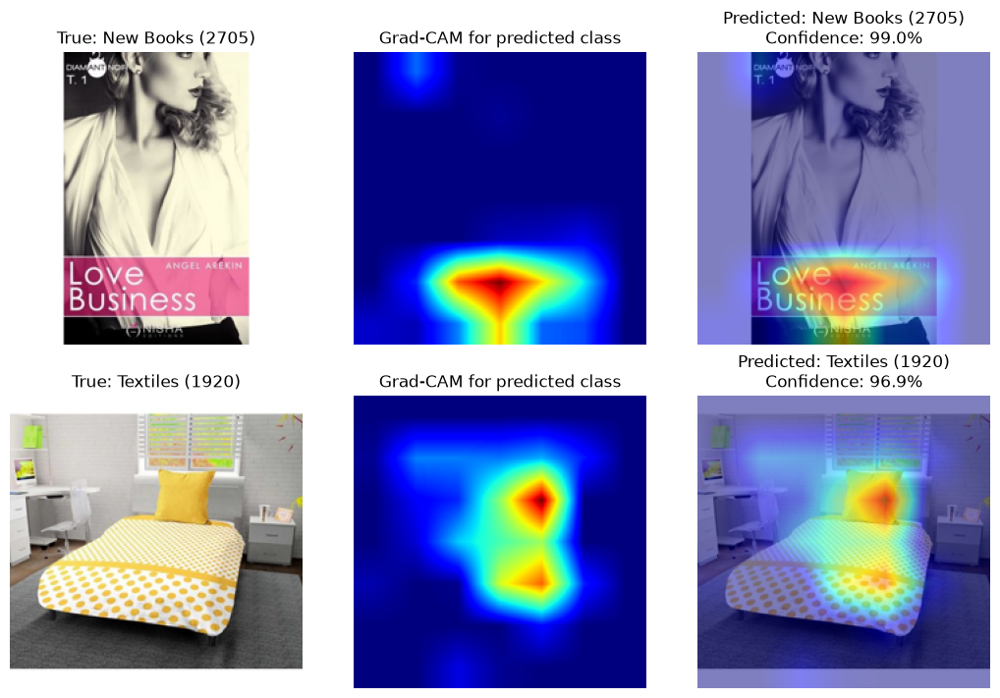
Figure 7: Grad-CAM for two correct predictions: a New Books cover (99.0% confidence) and a Textiles bed scene (96.9%). The heat sits on the cover title and on the pillow and bedding, not on the background.
Correct predictions (Figure 7): for the New Books cover, the heat sits on the title band; for Textiles, on the pillow and the bedding.
Effect of smart cropping (Figure 8): without the crop, the book is small, the heat spreads over the white background and the model predicts Stationery (73.6%). With the crop, the heat moves to the cover title and the model predicts the correct Used Books (97.2%).
Errors (Figure 9): a used book is predicted as New Books (94.4%): the model looks at the cover title, but a cover cannot show whether a book is used. A crayon set (Toys) is predicted as Stationery (98.0%), because crayons fit both categories.
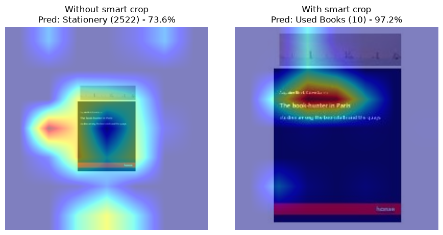
Figure 8: The same validation image without and with smart cropping. Without the crop the heat spreads over the white background; with it, the heat moves to the cover title.
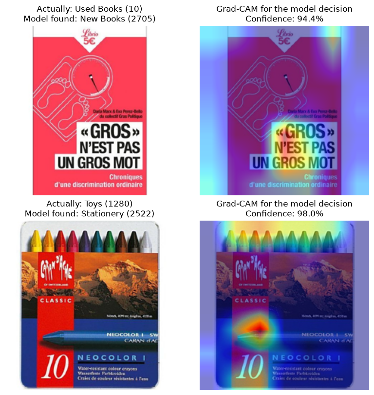
Figure 9: Grad-CAM on two errors: a used book predicted as New Books, and crayons (Toys) predicted as Stationery.
7.3 What the Image Adds to the Fusion
To see what each model brings, we compare equal soft voting with and without the image (Figure 10):
Overall: without the image (CamemBERT and SVM only), soft voting scores 0.8864. With it, 0.8941 (+0.77 points).
Where the image matters: mostly books and games: New Books (+8.9 points), Used Books (+7.4) and Games (+4.3). A cover shows what the text often does not say, such as whether a book is new or used.
Elsewhere: the image adds little, and costs at most 2.0 points on a few categories.
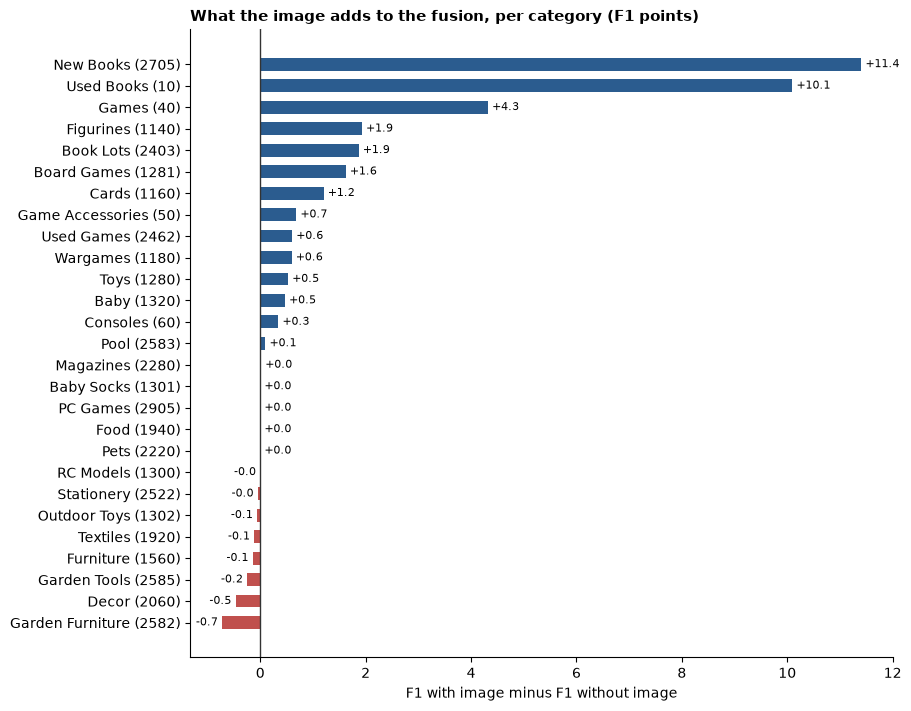
Figure 10: F1 of equal soft voting with the image minus without the image, per category.
8. Production Deployment & Recommendations
8.1 Production Architecture & Engineering Trade-offs
Deploying multimodal deep learning models into production requires balancing accuracy against inference latency, financial compute costs, and infrastructure complexity:
Deployment Tier
Target Architecture
Weighted F1
Compute
Recommended Use Case
Tier 1: Ultra-Fast
Calibrated LinearSVC (Text only)
0.8430
CPU only
Real-time seller form autocomplete; bulk backfill of legacy text catalogs.
Tier 2: Maximum Accuracy
Equal Soft Voting (CamemBERT + SVM + Image)
0.8941
GPU for CamemBERT and ConvNeXt
Production marketplace pipeline; no extra model to train on top of the three models.
Recommended Production Architecture — Cascaded Inference: Rather than evaluating heavy neural pipelines on all listings, production systems should adopt a two-stage cascade:
Pass new listings through the calibrated LinearSVC. If the top class probability exceeds 0.92 (21% of the validation products), accept its prediction on CPU.
For remaining uncertain or title-only listings, invoke the CamemBERT and ConvNeXt-Tiny pipelines and combine the three models by equal soft voting. On the validation products this keeps the full soft voting score (0.8940 against 0.8941) and runs the GPU models on 79% of products, saving about 21% of GPU work.
8.2 Project Conclusion
This project demonstrates that while text is the dominant modality for e-commerce categorization, computer vision provides a vital, non-redundant signal that compensates for real-world catalog imperfections. By pairing rigorous data hygiene (locked stratified split, deduplication, smart white-border cropping) with modern deep learning backbones (CamemBERT, ConvNeXt-Tiny) and late fusion by equal soft voting, we advanced classification performance from a naive baseline of 0.0258 F1 to a robust 0.8941 Weighted F1 (0.8826 Macro F1). The full pipeline is open, reproducible, and readily adaptable for production deployment.
9. Difficulties Encountered
Main scientific obstacle: the four book categories (Used Books, New Books, Book Lots, Magazines) look alike in both text and image. A title rarely says whether a book is new or used, and 7 of the SVM's 10 most confused category pairs are book pairs. The image helps, but a cover cannot always show the condition either.
Data: 35.1% of products have no description (97.4% of Book Lots), many images show a small product on a large white background, and 5,620 training images were removed because they were duplicates or had conflicting labels. Rakuten gives only numeric category codes, so the category names are our own interpretation.
Time: one CamemBERT training run takes about 2 hours on a laptop GPU (Apple M1 Pro), so its settings could not be tuned with cross-validation. The image models had to be trained on Google Colab GPUs.
Computing: On the laptop GPU, CamemBERT's memory use kept growing and macOS started swapping, until the memory was cleared after each prediction pass. The trained models are too large for git (the ConvNeXt checkpoint is 111 MB), so they are shared separately.
Relevance of the approach: a Random Forest trained on the three models' predictions scored higher, but it learns from the same validation products it is scored on, so its score is not comparable with the single models. We therefore kept equal soft voting as the final model.
10. Continuation of the Project
Text read from the images (OCR): we ran Tesseract OCR on the product images. 79% of images contain some text, but only 17% give three or more real words, and readable text mostly repeats the title. Adding the OCR text to the product text lowered the SVM (0.8436 → 0.8366) and CamemBERT (0.8765 → 0.8491). As a fourth model in equal soft voting it gave no gain (0.8938 against 0.8941). A stronger OCR engine, used only for books, could still help.
A learned fusion with a clean train / validation / test split: a meta-model such as a Random Forest needs predictions on products the base models never saw. The clean way is to train each base model five times on the training split, predict the held-out fifth each time, train the meta-model on these predictions, and keep the whole validation split as an untouched test set. A quick check on our data (meta-model trained on half of the validation products, scored on the other half, six random splits) gave 0.896 to 0.900 against 0.892 to 0.897 for equal soft voting, so a learned fusion may add about half a point.
Official test set: predicting the 13,812 official test products and submitting them to the challenge would give a score that is directly comparable with the benchmark.
Longer text for CamemBERT: texts are cut at 128 tokens, so the end of long descriptions is lost. A longer input could help on detailed listings.
11. Bibliography
Martin, L. et al. (2020). CamemBERT: a Tasty French Language Model. ACL 2020.
Wolf, T. et al. (2020). Transformers: State-of-the-Art Natural Language Processing. EMNLP 2020, System Demonstrations.
Loshchilov, I. & Hutter, F. (2019). Decoupled Weight Decay Regularization. ICLR 2019.
He, K. et al. (2016). Deep Residual Learning for Image Recognition. CVPR 2016.
Dosovitskiy, A. et al. (2021). An Image is Worth 16x16 Words: Transformers for Image Recognition at Scale. ICLR 2021.
Liu, Z. et al. (2022). A ConvNet for the 2020s. CVPR 2022.
Selvaraju, R. R. et al. (2017). Grad-CAM: Visual Explanations from Deep Networks via Gradient-based Localization. ICCV 2017.
Pedregosa, F. et al. (2011). Scikit-learn: Machine Learning in Python. Journal of Machine Learning Research 12.
Platt, J. (1999). Probabilistic Outputs for Support Vector Machines and Comparisons to Regularized Likelihood Methods. Advances in Large Margin Classifiers, MIT Press.
Wolpert, D. H. (1992). Stacked Generalization. Neural Networks 5(2).
Smith, R. (2007). An Overview of the Tesseract OCR Engine. ICDAR 2007.
Rakuten Institute of Technology. Rakuten France Multimodal Product Data Classification. ENS Challenge Data.
Appendix A. Gantt Chart
The project phases follow the mentor's schedule; the workstream bars show when each part of the work was active, based on the git history.
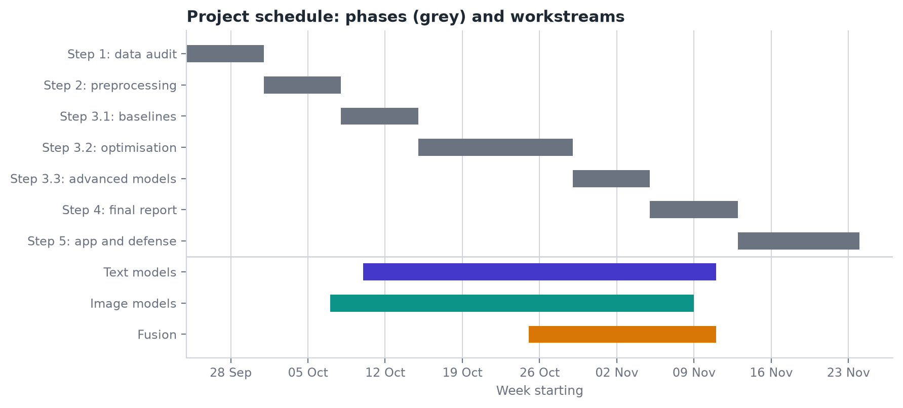
Figure 11: Project phases and workstreams, September to November 2026.